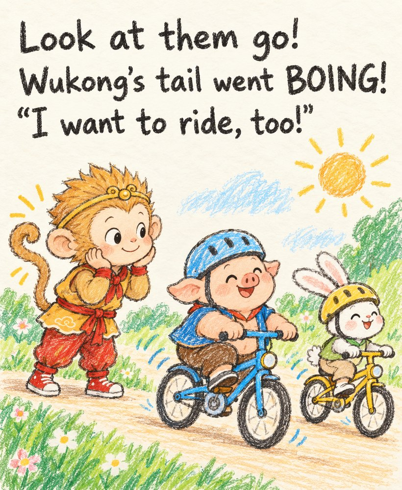
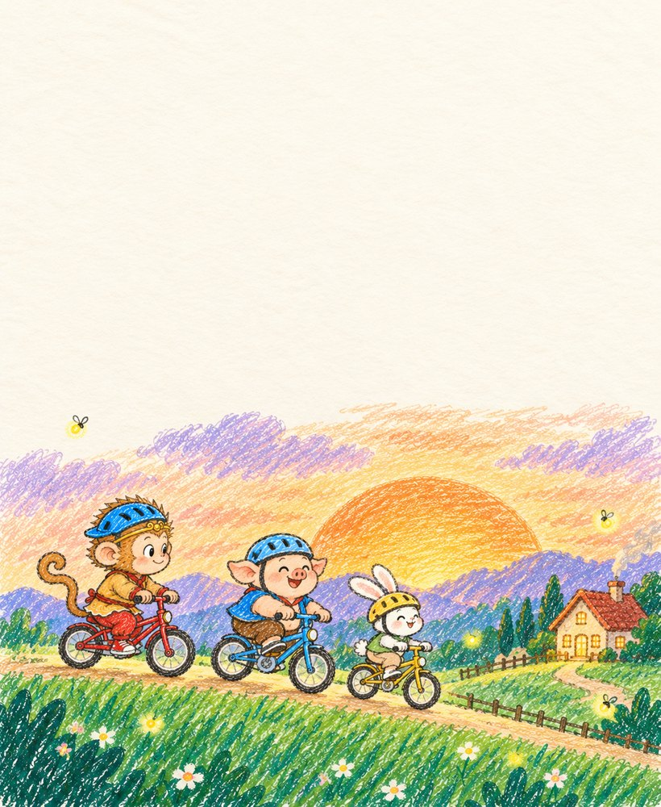
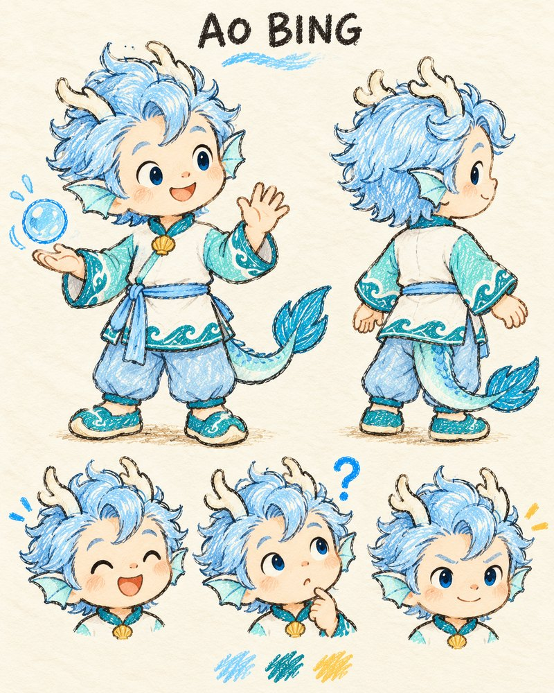

Our curious hero
Sun Wukong
Curious and playful, sometimes impatient, and willing to practice. Little mishaps can be funny while he learns with dignity. He is allowed to feel disappointed and take a rest.
The friends who wander through our bedtime stories — one picture and a few kind words each.

Curious and playful, sometimes impatient, and willing to practice. Little mishaps can be funny while he learns with dignity. He is allowed to feel disappointed and take a rest.

Warm and companionable, fond of little snacks and comfortable rests. He makes friends laugh, holds a bicycle seat and stays beside a tired friend.

Helpful and earnest, sometimes quietly proud of his strength. He can ask for help too, and learns to use a gentle touch and take his time.

Lively and brave, eager to try something new. Sometimes acts before thinking and learns to pause, listen and accept help. He is not always better at things than Wukong.

Gentle and curious, likes water and noticing small details. Can hesitate, then learn to speak up and try bravely. Quiet, but close to his friends.